Team Overview Dashboard
A single glance at team health: headline metrics, a capability radar, where the strengths and gaps are, and a live feed of recent wins.
- Headline KPIs — total resources, skills tracked, average level, expert (L4+) count
- Single Points of Failure flag skills with only one (or no) expert
- Technical / non‑technical capability radar of the whole team
- Top 5 strengths and Top 5 gaps, ranked automatically
- Recent Wins feed — new certifications & joiners, elite certs get extra flair
- Expiring‑certification alert banner (auto‑hides when nothing is due)
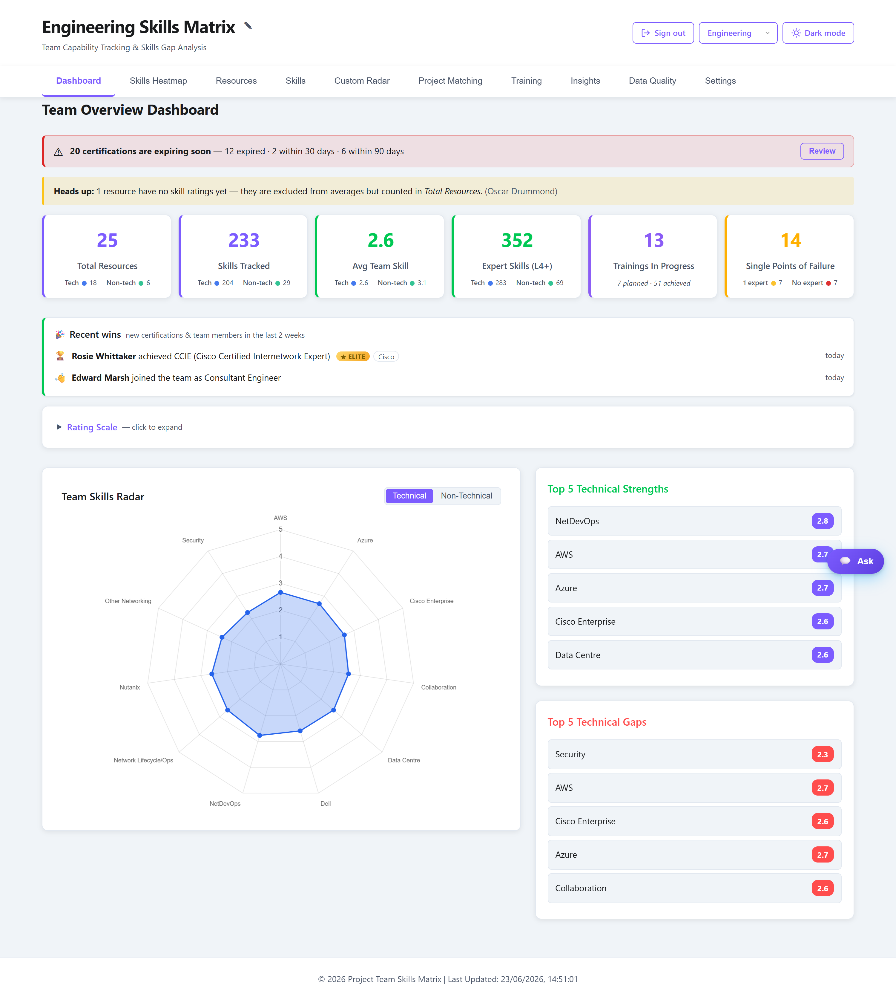
Skills Heatmap
Every person against every skill in one colour‑graded grid — spot concentrations, gaps and outliers instantly, and drill from main skills down to individual sub‑skills.
- Sort by name or by average skill level
- Toggle between main‑skill and sub‑skill granularity
- Colour gradient from gap (red) to expert (green)
- Inline edit mode to update ratings in place
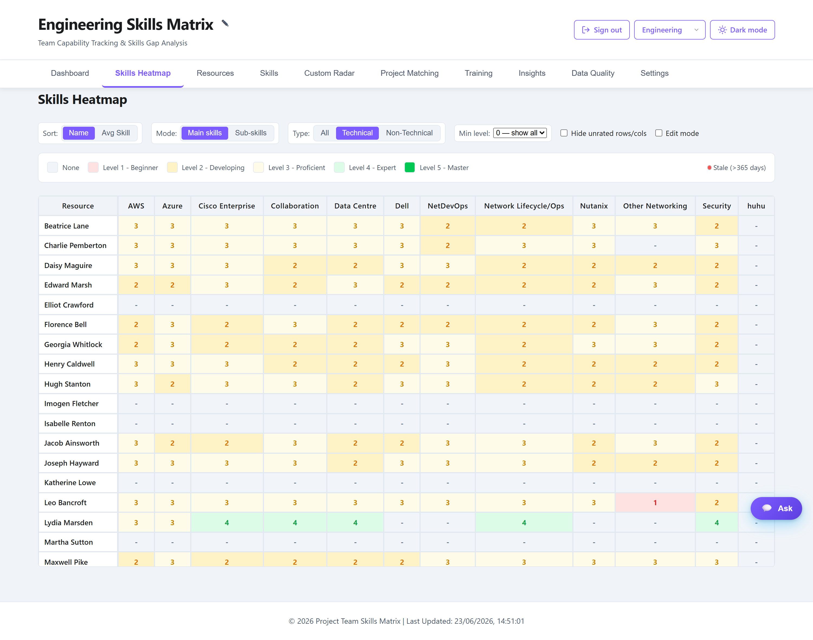
Resource Management
Browse the team as rich cards, then open any person to view their full capability profile or edit their details and ratings.
- Searchable, filterable resource cards with role and quick stats
- View profile — per‑person skills radar, certifications & full sub‑skill breakdown
- Edit — name, email, job role, password and every skill rating
- Add and remove resources; changes are scoped to the active department
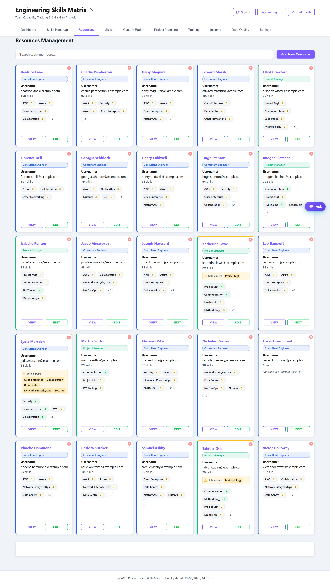
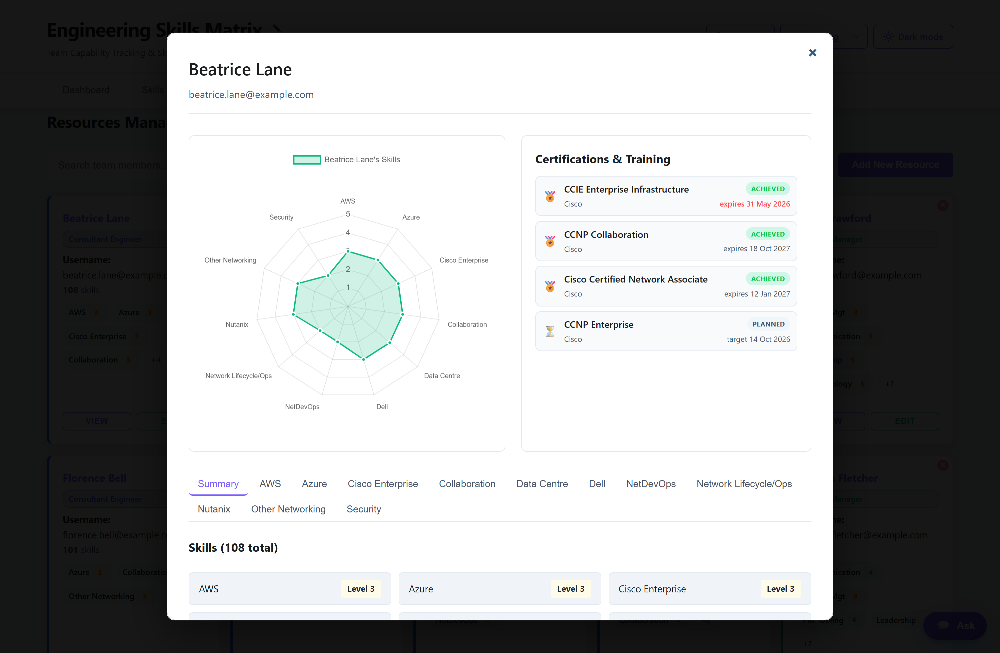
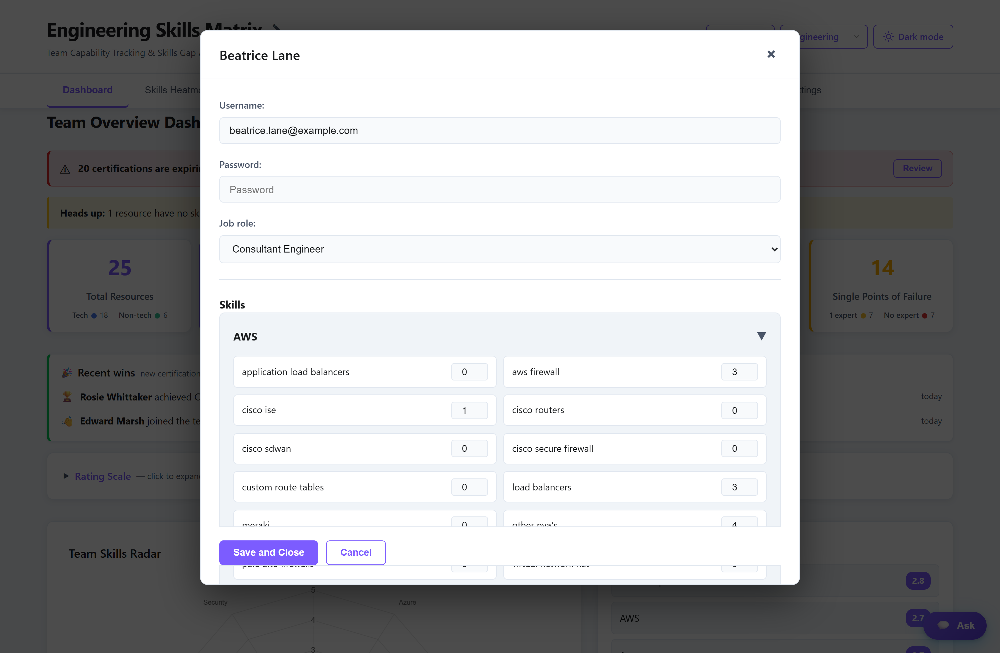
Skills & Sub‑Skills
Define the capability framework itself — main skill areas, the sub‑skills beneath them, their weight/demand and whether they're technical or non‑technical.
- Create, rename and delete skill categories
- Manage the sub‑skills under each area as editable chips
- Set a weight/demand (1–10) to prioritise critical skills
- Technical vs non‑technical classification feeds the radars
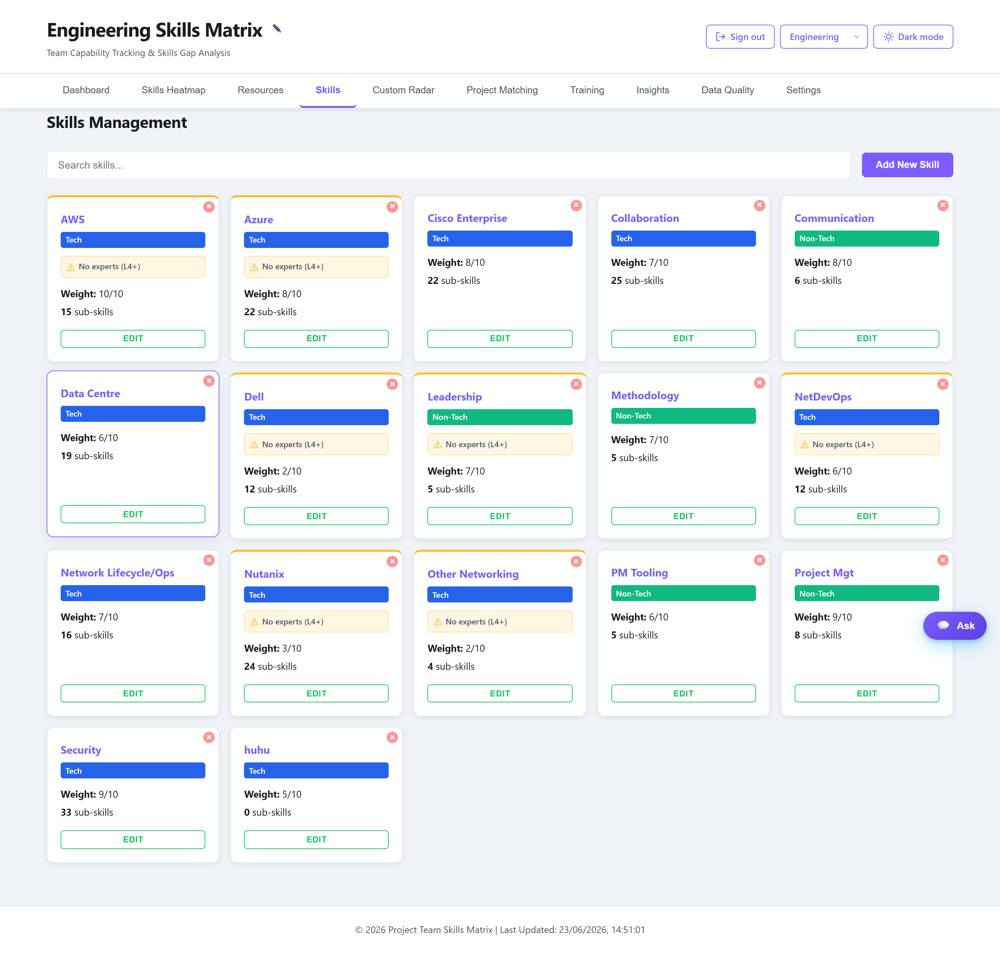
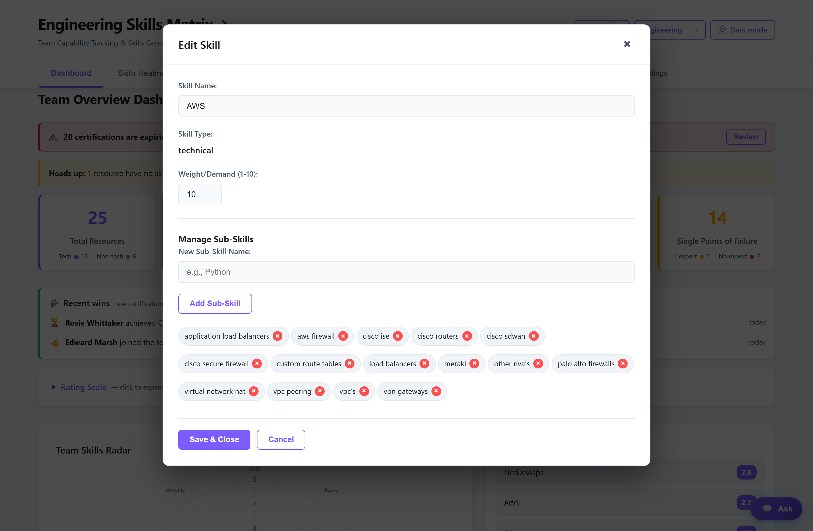
Custom Radar
Pick any combination of sub‑skills and instantly plot the team's average capability across them — and see which people best fit that exact profile.
- Search and multi‑select sub‑skills across every category
- Live radar of team‑average level on the chosen axes
- Suitable Resources ranked by average level across the selection
- Per‑person, per‑sub‑skill levels for quick comparison
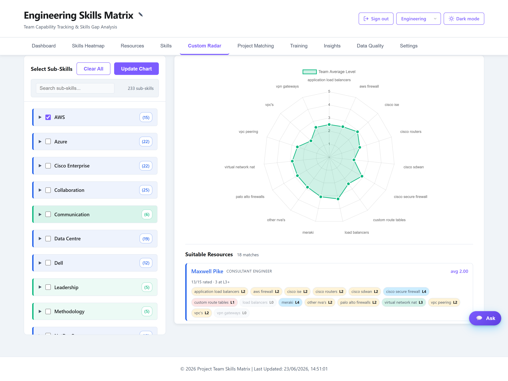
Project Matching
Describe a project's requirements and the matcher finds the people who best fit — scored against the skills you need.
- Enter required skills or a free‑text brief
- Ranked team members with match scores
- Highlights strengths and shortfalls per candidate
- Works entirely within the active department's data
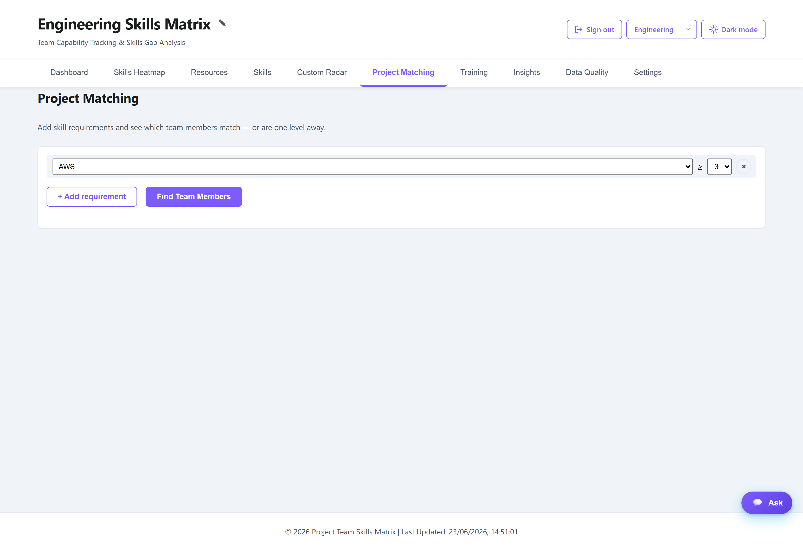
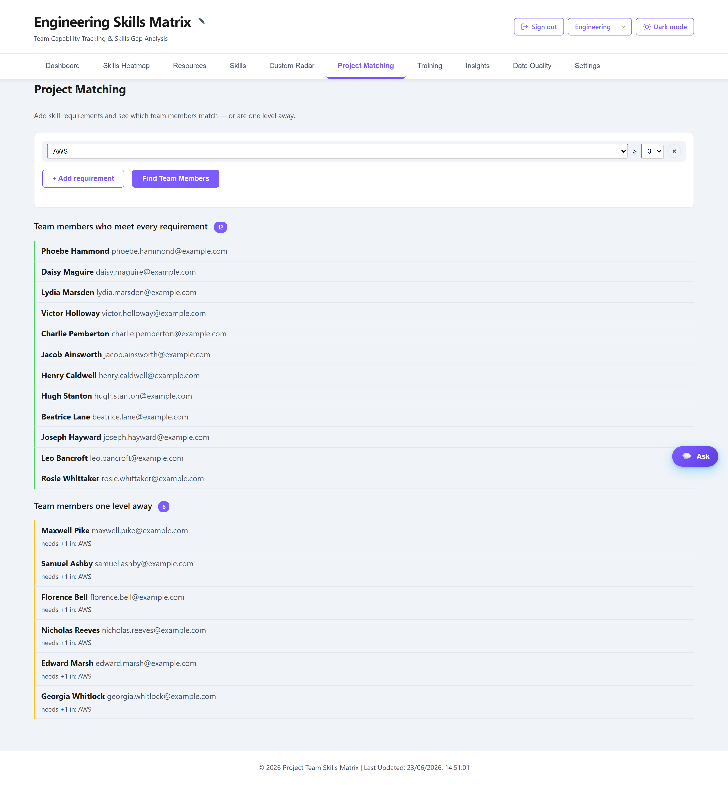
Training & Certifications
A full certification catalogue with per‑person assignments, statuses and expiry tracking — so nothing lapses unnoticed.
- Catalogue of certifications & courses by vendor and category
- Assign to people with status: planned · in‑progress · achieved · expired
- Target dates, completion dates and expiry dates
- Expiry tracking feeds the dashboard alert banner
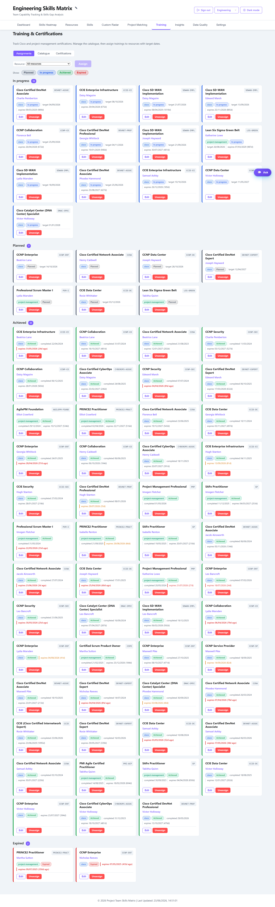
Team Insights
Auto‑generated, plain‑English observations about the team's profile, risks and opportunities — computed locally from your data.
- Recommended actions & bus‑factor (single‑expert) risks
- Highest demand‑deficit skills and coverage imbalance
- Certification pipeline & specialists‑vs‑generalists view
- Quickest wins for upskilling and resources missing ratings
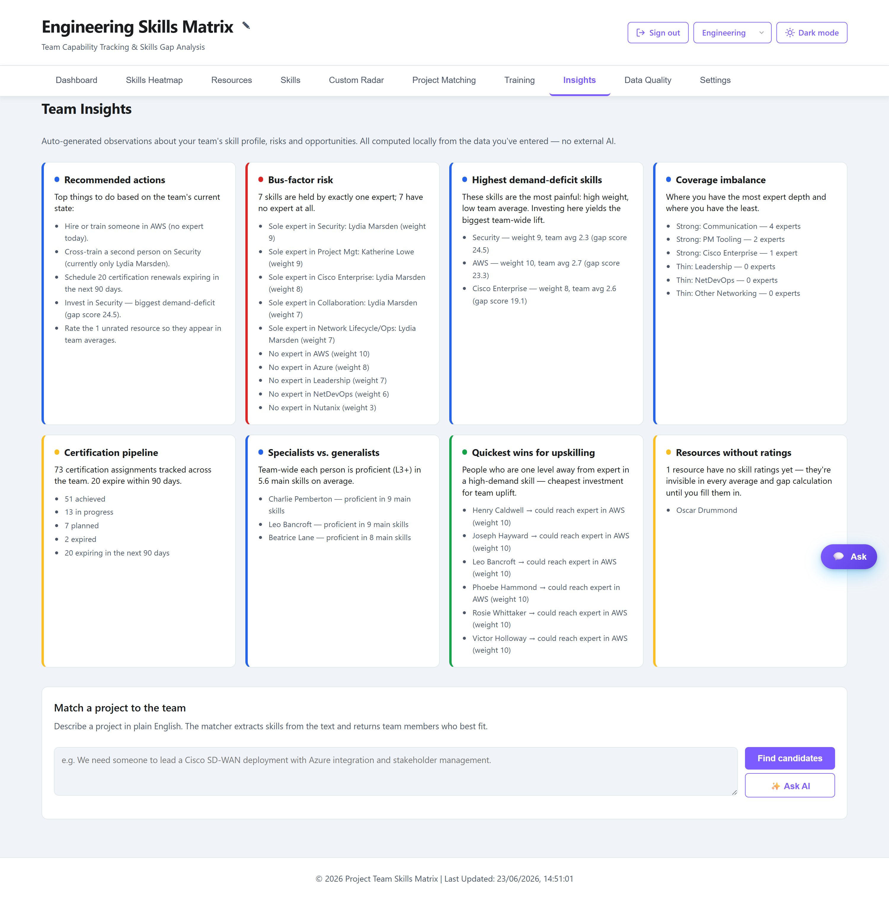
AI Assistant AI
A built‑in chatbot answers natural‑language questions about your team and project fit — with rich, readable formatting that highlights the people and skills it mentions.
- Ask about strengths, gaps, certifications or "who can do X?"
- Answers grounded in the active department's live data
- Resource names and skills highlighted inline for scannability
- Markdown formatting — bold, lists and structure
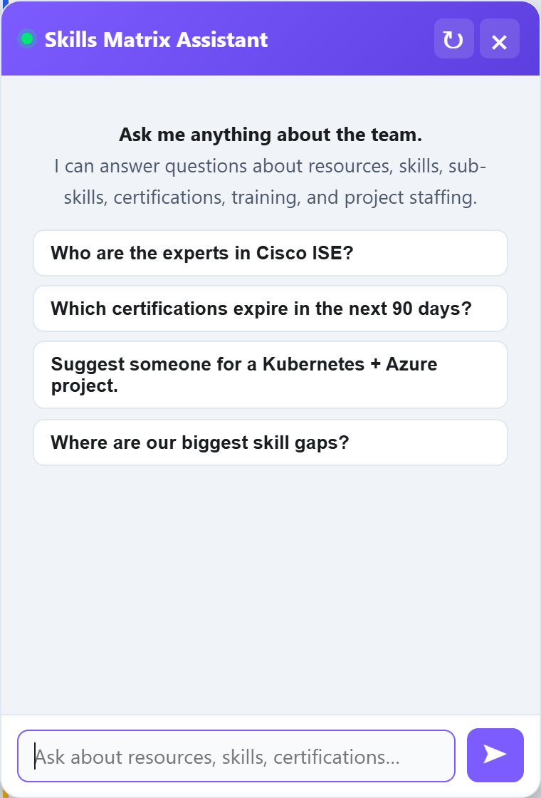
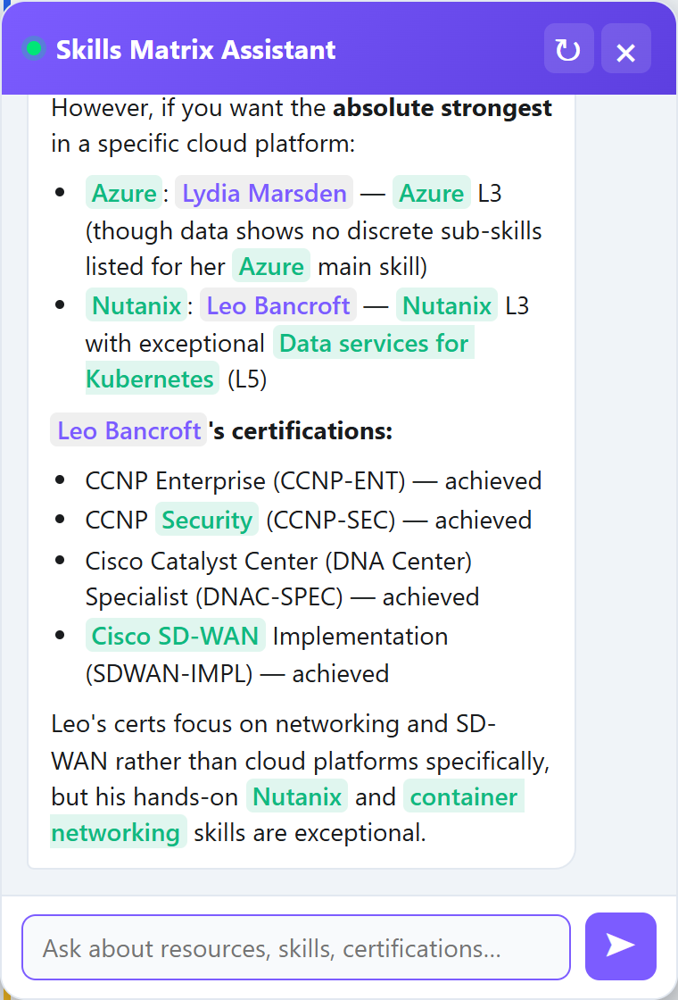
Security Posture Candid Review
A security architect's assessment, monocle firmly in place. The short version: a genuinely nice internal tool — treat it as exactly that.
Secure enough as an internal, low‑sensitivity tool behind a real network boundary; not as an internet‑facing app.
The entire API is unauthenticated
Only static .js/.css/.html sit behind basic auth. Every /api/* route —
including POST /api/data (wipes & rebuilds a department) and DELETE /api/resources/:id —
answers anyone who can reach the port, with no credentials. The login is theatre.
Secrets baked into the Docker image
COPY .env bakes live Anthropic/OpenAI/xAI/DeepSeek/Cloudflare keys into a committed image layer, in plaintext.
Treat them as burned — rotate all of them.
Plaintext credentials in the repo
creds.txt holds admin / skillsadmin2024; .htpasswd ships alongside it.
PostgreSQL set to trust, all interfaces
host all all 0.0.0.0/0 trust, listen_addresses='*', password changeme123.
Saved today only by the port not being published.
Unauthenticated + AI = an open tab on your bill
Anyone can drive the server‑side LLM key indefinitely. No rate limiting, no quotas.
Departments are not a security boundary
The active department is a client‑controlled X‑Department header. One trust level exists: "can reach the box."
Wide‑open CORS
app.use(cors()) invites every origin to a party that already has no bouncer.
Stored‑XSS lineage
Two innerHTML injection paths (chat + switcher) were patched; the codebase leans on innerHTML and warrants a fuller audit.
No TLS in the stack itself
Basic‑auth credentials travel base64‑encoded every request, relying on an assumed external TLS terminator.
Other niggles
No CSRF tokens (mitigated by no cookie session) · outstanding npm audit findings · SQL + values logged to stdout.
- SQL is parameterised throughout (
$1, $2…) — no injection. - Resource passwords use bcrypt.
- The destructive
POST /api/datais at least scoped to a single department.
- Put
/api/*behind auth. Nothing else matters until this is done. - Rotate every key, stop
COPY .envinto the image, purgecreds.txt+.htpasswdfrom git history. - Fix Postgres —
scram‑sha‑256, a real password, bind to localhost only. - Rate‑limit the AI endpoints, enforce TLS, and tighten CORS to known origins.